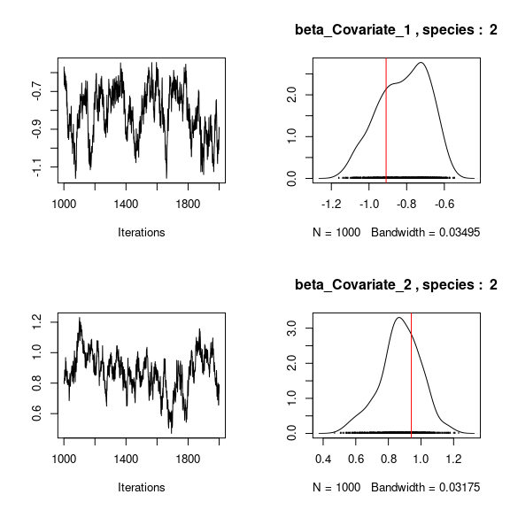

1 Model definition
We define the following model :
- Response variable: \(Y=(y_{ij})^{i=1,\ldots,nsite}_{j=1,\ldots,nsp}\) such that \(y_{ij} \sim \mathcal{N}(\theta_{ij}, V)\) such that:
\[ \theta_{ij} =\alpha_i + \beta_{0j}+X_i.\beta_j+ W_i.\lambda_j \]
It can be easily shown that: \(y_{ij} = \alpha_i + \beta_{0j} + X_i.\beta_j + W_i.\lambda_j + \epsilon_{i,j}\), with \(\forall (i,j) \ \epsilon_{ij} \sim \mathcal{N}(0,V)\) where:
Latent variables: \(W_i=(W_i^1,\ldots,W_i^q)\) where \(q\) is the number of latent variables considered, which has to be fixed by the user (by default \(q=2\)). We assume that \(W_i \sim \mathcal{N}(0,I_q)\) and we define the associated coefficients: \(\lambda_j=(\lambda_j^1,\ldots, \lambda_j^q)'\). We use a prior distribution \(\mathcal{N}(0,1)\) for all lambdas not concerned by constraints to \(0\) on upper diagonal and to strictly positive values on diagonal.
Explanatory variables: bioclimatic data about each site. \(X=(X_i)_{i=1,\ldots,nsite}\) with \(X_i=(x_i^1,\ldots,x_i^p)\in \mathbb{R}^p\) where \(p\) is the number of bioclimatic variables considered. The corresponding regression coefficients for each species \(j\) are noted : \(\beta_j=(\beta_j^1,\ldots,\beta_j^p)'\).
\(\beta_{0j}\) correspond to the intercept for species \(j\) which is assumed to be a fixed effect. We use a prior distribution \(\mathcal{N}(0,1)\) for all betas.
\(\alpha_i\) represents the random effect of site \(i\) such as \(\alpha_i \sim \mathcal{N}(0,V_{\alpha})\) and we assume that \(V_{\alpha} \sim \mathcal {IG}(\text{shape}=0.5, \text{rate}=0.005)\) as prior distribution by default.
\(V\) represents the variance of residuals or overdispersion term and we assume that \(V \sim \mathcal {IG}(\text{shape}=0.5, \text{rate}=0.005)\) as prior distribution by default.
2 Simulated explanatory variables
We simulate two explanatory variables considering 150 inventory sites.
#== Data simulation
#= Number of inventory sites
nsite <- 150
#= Set seed for repeatability
seed <- 1234
set.seed(seed)
#= Ecological process (suitability)
x1 <- rnorm(nsite, 0, 1)
x2 <- rnorm(nsite, 0, 1)
X <- cbind(rep(1, nsite), x1, x2)
colnames(X) <- c("Intercept", "Covariate_1", "Covariate_2")
np <- ncol(X)
head(X)
#> Intercept Covariate_1 Covariate_2
#> [1,] 1 -1.2070657 -0.37723765
#> [2,] 1 0.2774292 0.09761946
#> [3,] 1 1.0844412 1.63874465
#> [4,] 1 -2.3456977 -0.87559247
#> [5,] 1 0.4291247 0.12176000
#> [6,] 1 0.5060559 1.362130663 Simulated response data-set
We simulate the response variable for 20 species on the 150 inventory sites by considering the explanatory variables simulated above and following the model defined previously with two latent axes.
#= Number of species
nsp <- 20
#= Number of latent variables
n_latent <- 2
#= Latent variables W
W <- matrix(rnorm(nsite*n_latent,0,1), nsite, n_latent)
#= Fixed species effect beta
beta.target <- t(matrix(runif(nsp*np,-1,1),
byrow=TRUE, nrow=nsp))
#= Factor loading lambda
lambda.target <- matrix(0, n_latent, nsp)
mat <- t(matrix(runif(nsp*n_latent, -1, 1), byrow=TRUE, nrow=nsp))
lambda.target[upper.tri(mat, diag=TRUE)] <- mat[upper.tri(mat, diag=TRUE)]
diag(lambda.target) <- runif(n_latent, 0, 2)
#= Variance of random site effect
V_alpha.target <- 0.2
#= Random site effect alpha
alpha.target <- rnorm(nsite,0 , sqrt(V_alpha.target))
# Simulation of response data with probit link
theta.target <- X%*%beta.target + W%*%lambda.target + alpha.target
V.target <- 0.2
Y <- matrix(rnorm(nsite*nsp, theta.target, sqrt(V.target)), nrow=nsite)
colnames(Y) <- paste0("sp_", 1:nsp)
rownames(Y) <- paste0("site_", 1:nsite)
head(Y)
#> sp_1 sp_2 sp_3 sp_4 sp_5 sp_6
#> site_1 -0.7513513 0.1938513 -0.3341318 0.4615068 0.6362873 2.0080567
#> site_2 -0.4031203 0.4857520 1.5131946 0.4040637 2.4730303 1.7665528
#> site_3 1.5911493 2.7182472 1.3733790 -0.2761853 2.0461322 1.0899762
#> site_4 0.9752238 0.7198308 -2.5996780 1.9087207 0.8768741 1.3189328
#> site_5 0.6105743 0.8103491 1.2678484 0.2937129 1.5203986 1.4759447
#> site_6 0.3168066 -1.2700600 2.2840930 -0.3492452 2.5576827 0.7280931
#> sp_7 sp_8 sp_9 sp_10 sp_11 sp_12
#> site_1 2.0981038 0.7369308 0.01616176 -0.1164192 -0.3658026 0.18287210
#> site_2 0.5862447 1.7748922 0.97033648 -1.2470187 -1.4596872 0.42369422
#> site_3 -0.7325110 2.5399112 2.09830450 1.1835467 0.3411750 0.37625126
#> site_4 3.2434844 1.2667078 -1.10039496 2.0361541 0.1810247 -0.05409129
#> site_5 0.5105002 1.1323825 0.41990553 -0.7778214 -0.8452017 -0.18029809
#> site_6 0.1862157 1.1649344 -0.05179254 0.4108982 1.3738738 3.51310660
#> sp_13 sp_14 sp_15 sp_16 sp_17 sp_18
#> site_1 -1.4431206 -2.2996932 0.2694641 -1.36116222 -0.1606858 -0.94163246
#> site_2 -2.2419704 -1.3146336 -1.2466153 -2.38941246 1.3963313 0.01105865
#> site_3 -2.2263546 -1.7595407 -1.9260341 -1.42729821 3.6216150 1.60120695
#> site_4 -0.3812059 -2.2537336 0.1574373 -1.14414930 -2.6688341 -0.01185902
#> site_5 -1.2246966 -1.3862252 -0.2996094 -1.12060608 0.8337514 0.43759674
#> site_6 -0.7666952 0.2042448 0.2172103 0.03215005 1.9345582 -0.61524799
#> sp_19 sp_20
#> site_1 -0.60336095 -0.65362912
#> site_2 0.71859095 0.71142847
#> site_3 1.35201727 1.65392873
#> site_4 -0.98040020 -0.06251145
#> site_5 -0.04377821 0.47058041
#> site_6 0.55102996 1.20728169This data-set is available in the jSDM-package R package. It can be loaded with the data() command. The frogs dataset is in “wide” format: each line is a site and the occurrence data (from Species_1 to Species_9) are in columns. A site is characterized by its x-y geographical coordinates, one discrete covariate and two other continuous covariates.
We rearrange the data in two data-sets: a first one for the presence-absence observations for each species (columns) at each site (rows), and a second one for the site characteristics.
We also normalize the continuous explanatory variables to facilitate MCMC convergence.
4 Parameter inference
We use the jSDM_gaussian function to fit the JSDM (increase the number of iterations to achieve convergence).
library(jSDM)
#> ##
#> ## jSDM R package
#> ## For joint species distribution models
#> ## https://ecology.ghislainv.fr/jSDM
#> ##
# Increase number of iterations (burnin and mcmc) to get convergence
mod <- jSDM_gaussian(# Iteration
burnin=1000,
mcmc=1000,
thin=1,
# Response variable
response_data=Y,
# Explanatory variables
site_formula =~ Covariate_1 + Covariate_2,
site_data=X,
n_latent=2,
site_effect="random",
# Starting values
alpha_start=0,
beta_start=0,
lambda_start=0,
W_start=0,
V_alpha=1,
V_start=1 ,
# Priors
shape_Valpha=0.5,
rate_Valpha=0.0005,
shape_V=0.5, rate_V=0.0005,
mu_beta=0, V_beta=1,
mu_lambda=0, V_lambda=1,
seed=1234, verbose=1)
#>
#> Running the Gibbs sampler. It may be long, please keep cool :)
#>
#> **********:10.0%
#> **********:20.0%
#> **********:30.0%
#> **********:40.0%
#> **********:50.0%
#> **********:60.0%
#> **********:70.0%
#> **********:80.0%
#> **********:90.0%
#> **********:100.0%5 Analysis of the results
np <- nrow(mod$model_spec$beta_start)
# ===================================================
# Result analysis
# ===================================================
#==========
#== Outputs
#= Parameter estimates
# Species effects beta and factor loadings lambda
## Trace and density of beta_j for the first two species
mean_beta <- matrix(0,nsp,ncol(X))
par(mfrow=c(2,2))
for (j in 1:nsp){
mean_beta[j,] <- apply(mod$mcmc.sp[[j]]
[,1:ncol(X)], 2, mean)
if(j<=2){
for (p in 1:ncol(X)){
coda::traceplot(mod$mcmc.sp[[j]][,p])
coda::densplot(mod$mcmc.sp[[j]][,p],
main = paste(colnames(mod$mcmc.sp[[j]])[p],", species : ",j))
abline(v=beta.target[p,j],col='red')
}
}
}
## Trace and density of lambda_j for the first two species
mean_lambda <- matrix(0,nsp,n_latent)
par(mfrow=c(2,2))
for (j in 1:nsp){
mean_lambda[j,] <- apply(mod$mcmc.sp[[j]]
[,(ncol(X)+1):(ncol(X)+n_latent)], 2, mean)
if(j<=2){
for (l in 1:n_latent) {
coda::traceplot(mod$mcmc.sp[[j]][,ncol(X)+l])
coda::densplot(mod$mcmc.sp[[j]][,ncol(X)+l],
main=paste(colnames(mod$mcmc.sp[[j]])
[ncol(X)+l],", species : ",j))
abline(v=lambda.target[l,j],col='red')
}
}
}
# Representation of fitted values according to expected ones
par(mfrow=c(1,2))
plot(t(beta.target), mean_beta,
main="species effect beta",
xlab ="obs", ylab ="fitted")
abline(a=0,b=1,col='red')
plot(t(lambda.target), mean_lambda,
main="factor loadings lambda",
xlab ="obs", ylab ="fitted")
abline(a=0,b=1,col='red')
## W latent variables
## Trace and density of latent variables W_i for the first two sites
par(mfrow=c(2,2))
for (l in 1:n_latent) {
for (i in 1:2) {
coda::traceplot(mod$mcmc.latent[[paste0("lv_",l)]][,i],
main = paste0("Latent variable W_", l, ", site ", i))
coda::densplot(mod$mcmc.latent[[paste0("lv_",l)]][,i],
main = paste0("Latent variable W_", l, ", site ", i))
abline(v=W[i,l],col='red')
}
}
# Representation of fitted values according to expected ones
par(mfrow=c(1,2))
for (l in 1:n_latent) {
plot(W[,l],
summary(mod$mcmc.latent[[paste0("lv_",l)]])[[1]][,"Mean"],
main = paste0("Latent variable W_", l),
xlab ="obs", ylab ="fitted")
abline(a=0,b=1,col='red')
}
## alpha
## Trace and density of alpha_i for the first two sites
for (i in 1:2){
coda::traceplot(mod$mcmc.alpha[,i],
main = paste0("Site effect alpha_", i))
coda::densplot(mod$mcmc.alpha[,i],
main = paste0("Site effect alpha_", i))
abline(v=alpha.target[i],col='red')
}
# Representation of fitted values according to expected ones
par(mfrow=c(1,3))
plot(alpha.target, summary(mod$mcmc.alpha)[[1]][,"Mean"],
xlab ="obs", ylab ="fitted", main="site effect alpha")
abline(a=0,b=1,col='red')
## Valpha
coda::traceplot(mod$mcmc.V_alpha)
coda::densplot(mod$mcmc.V_alpha)
abline(v=V_alpha.target,col='red')
## Variance of residuals
par(mfrow=c(1,2))
coda::traceplot(mod$mcmc.V)
coda::densplot(mod$mcmc.V,
main="Variance of residuals")
abline(v=V.target, col='red')
## Deviance
summary(mod$mcmc.Deviance)
#>
#> Iterations = 1001:2000
#> Thinning interval = 1
#> Number of chains = 1
#> Sample size per chain = 1000
#>
#> 1. Empirical mean and standard deviation for each variable,
#> plus standard error of the mean:
#>
#> Mean SD Naive SE Time-series SE
#> 3658.879 35.269 1.115 1.325
#>
#> 2. Quantiles for each variable:
#>
#> 2.5% 25% 50% 75% 97.5%
#> 3591 3635 3658 3682 3733
plot(mod$mcmc.Deviance)6 Matrice of correlations
After fitting the jSDM with latent variables, the full species residual correlation matrix \(R=(R_{ij})^{i=1,\ldots, nspecies}_{j=1,\ldots, nspecies}\) can be derived from the covariance in the latent variables such as : \[\Sigma_{ij} = \begin{cases} \lambda_i^T .\lambda_j + V, & \text{if } i=j \\ \lambda_i^T .\lambda_j, & \text{else.} \end{cases}\], then we compute correlations from covariances : \[R_{i,j} = \frac{\Sigma_{ij}}{\sqrt{\Sigma _{ii}\Sigma _{jj}}}\].
We use the plot_residual_cor() function to compute and display the residual correlation matrix :
plot_residual_cor(mod)
7 Predictions
We use the predict.jSDM() S3 method on the mod object of class jSDM to compute the mean (or expectation) of the posterior distributions obtained and get the expected values of response variable.
# Sites and species concerned by predictions :
## 50 sites among the 150
Id_sites <- sample.int(150, 50)
## All species
Id_species <- colnames(Y)
# Simulate new observations of covariates on those sites
simdata <- matrix(nrow=50, ncol = ncol(mod$model_spec$site_data))
colnames(simdata) <- colnames(mod$model_spec$site_data)
rownames(simdata) <- Id_sites
simdata <- as.data.frame(simdata)
simdata$Covariate_1 <- rnorm(50)
simdata$Covariate_2 <- rnorm(50)
# Predictions
Y_pred <- predict(mod, newdata=simdata, Id_species=Id_species,
Id_sites=Id_sites, type="mean")
hist(Y_pred, main="Predicted response with simulated data", xlab="Y_pred")